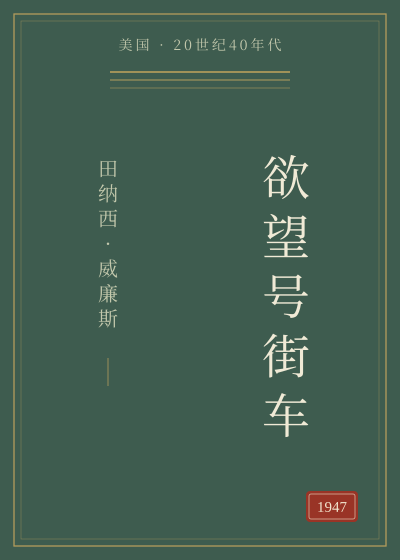
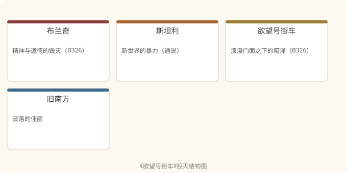

欲望号街车
一、基本信息
| 作者 | 田纳西·威廉斯 |
|---|---|
| 成书/出版 | 1947年（Britannica B326：A Streetcar Named Desire (1947)——获普利策戏剧奖） Tennessee Williams — Encyclopaedia Britannica（百科全书） |
| 国别/地区 | 美国 |
| 时代 | 现当代 · 20世纪40年代 |
| 体裁 | 戏剧 |
| 语言 | 英语 |

《欲望号街车》毁灭结构图（主题·结构图）
二、创作背景
Britannica（B326）：'It is a study of the mental and moral ruin of Blanche DuBois, another former Southern belle.'——本剧是对布兰奇·杜波依斯——另一位没落南方佳丽——精神与道德毁灭的研究。
Britannica（B326）：威廉斯的戏剧'揭示了一个人类挫折的世界，在浪漫的门面之下暗涌着性与暴力'（whose plays reveal a world of human frustration in which sex and violence underlie an atmosphere of romantic gentility）。
作者页（B326）：威廉斯两度普利策奖（1947本剧、1955《热铁皮屋顶上的猫》），流派 Southern gothic。
三、内容脉络
没落南方佳丽布兰奇投奔妹妹——与妹夫斯坦利的冲突步步升级，终于精神与道德的双重毁灭（B326：a study of the mental and moral ruin of Blanche DuBois；新奥尔良场景与冲突细节通说待核）。
结局：布兰奇被送走（'送走'细节通说待核）。
四、主要人物表
| 人物 | 身份 | 说明 |
|---|---|---|
| 布兰奇·杜波依斯（Blanche DuBois） | 没落南方佳丽 | B326 点名主角 |
| 斯坦利（Stanley） | 妹夫 | （通说待核，B326正文未载全名） |
| 斯黛拉（Stella） | 妹妹 | （通说待核，B326未载） |
五、主题与艺术特点
- 精神与道德的毁灭（B326：mental and moral ruin）。
- 浪漫门面之下的性与暴力（B326：sex and violence underlie an atmosphere of romantic gentility）。
- 旧南方的没落与'南方哥特'（B326：former Southern belle；Southern gothic）。
六、影响与评论
- Britannica：A Streetcar Named Desire (1947) 获普利策戏剧奖（B326）。
Tennessee Williams — Encyclopaedia Britannica（百科全书） - Britannica：'His works won four Drama Critics' awards and were widely translated and performed around the world.'（B326）。
Tennessee Williams — Encyclopaedia Britannica（百科全书）
七、阅读建议
难点
- '欲望''公墓'等站名的象征体系（通说待核）。
- 南方没落贵族与新移民工业城市的阶级冲突（通说待核）。
- 《欲望号街车》中译本（人民文学/上海译文等——通说待核）。
- 英文原版。
威廉斯首选；可与《玻璃动物园》（1944）对读。
八、待核实
- 1947年首演剧场（Ethel Barrymore Theatre说）待核。
- 斯坦利·科瓦尔斯基/斯黛拉人名核对。
- 1951年电影改编（马龙·白兰度）待核。
- '欲望号/公墓号'街车象征细节待核。